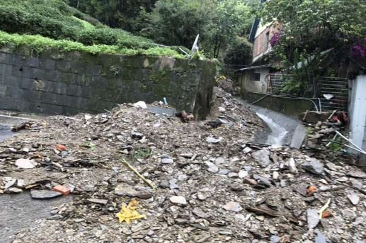
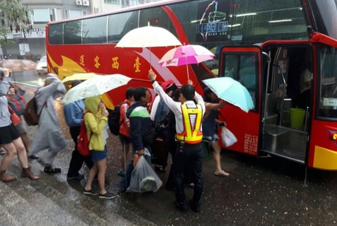
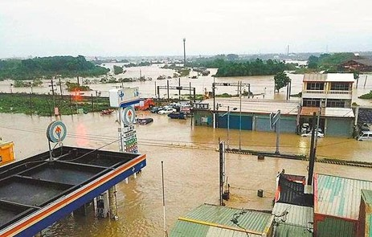
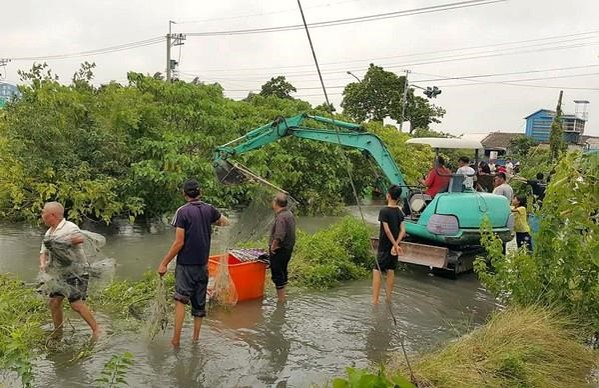

梅雨豪雨0601之災情概述
\
交通方面：
- 桃園、松山機場多個航班取消或延誤。
- 台鐵，多路段水淹鐵軌，基隆—花東、嘉義—雲林…交通中斷。
- 阿里山森林鐵路停駛。
- 公路預警式封路，土石流坍方，淹水車輛拋錨，台1，8，14，18，20，29線。
- 孤島，山區村莊交通中斷，南投仁愛鄉、神木村和高雄桃源區。
- 金山磺溪橋塌傍。


淹水與其他方面：
- 嚴重淹水，淡水老街、台北市、新北市、雲林、高雄、嘉義...。
- 啟動基隆河員山仔分洪堰(6/2)
- 基隆、淡水河多艘遊艇被沖走。
- 山區土石流，預防性撤離
- 核一廠2號機停機(6/2 10:13)
- 雲林農業遭重創，魚塭、水稻、菜園、2萬隻土雞。
- 山區民宅遭大水沖毀
- 高雄桃源區3天累積降雨量達1432mm，雨量列全台第一。
- 死亡3人，失蹤2人。

